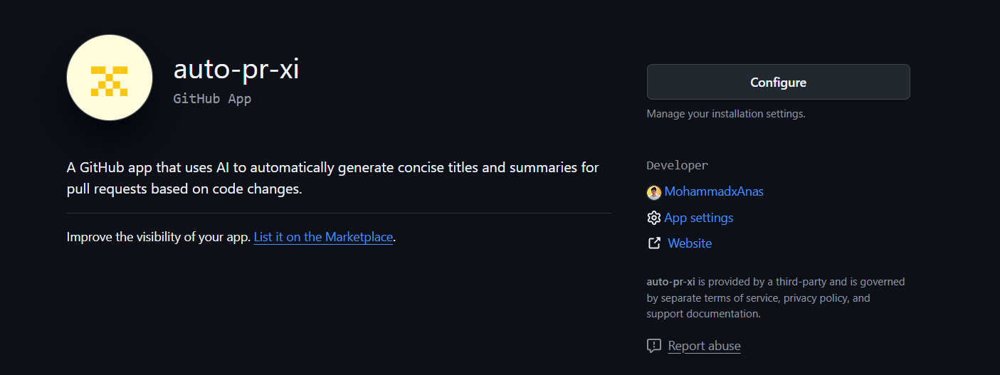
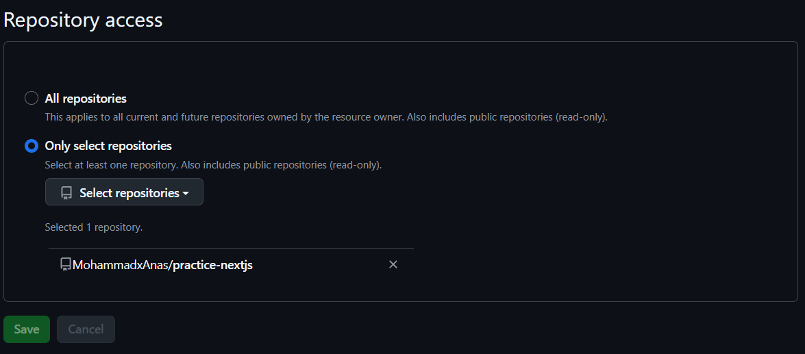
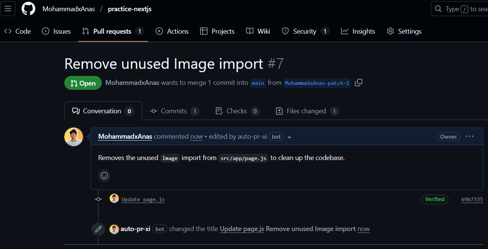

A sleek GitHub App that uses AI to auto-generate meaningful PR titles and summaries — saving time, every time.
Install on GitHub1. Install the app from the button above
2. Choose the GitHub repository where you want to install it
3. Open a pull request and wait a few seconds — the title and summary will be auto-filled
